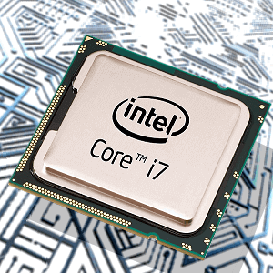

Składamy komputer. Montaż procesora (na podstawie CPU firmy Intel).
Z artykułu dowiesz się jak założyć procesor? Jest to dość prosta, aczkolwiek bardzo ważna czynność, która wpływa na późniejszą stabilność i chłodzenie rdzeni procesora. Nieprawidłowy montaż może uniemożliwić uruchomienie komputera.
Aby powrócić kliknij baner.
Jak założyć procesor?
Montaż zaczynamy od zlokalizowania na płycie głównej gniazda procesora. Jest zazwyczaj umieszczone centralnie na płycie głównej. Jeżeli płyta jest nowa, będzie w nim umieszczona zaślepka jak na zdjęciu poniżej.
Następnie musimy odgiąć lekko dźwigienkę z prawej strony i podnieść ją do góry. Razem z dźwignią uniesie się również klapka socketu.
Po usunięciu zaślepki ujrzymy gniazdo, w którym należy ostrożnie umieścić CPU.
Delikatnie wkładamy procesor, nie używając siły. Powinien sam wskoczyć na swoje miejsce. Jeżeli tak się nie dzieje nie dopychamy go. Oznacza to, że próbowaliśmy go włożyć odwrotnie. Wcięcia w obudowie procesora muszą bowiem zgadzać się z wybrzuszeniami w sockecie, zaznaczonymi na zdjęciu poniżej.
Jeżeli CPU jest na swoim miejscu zamykamy klapkę i dociskamy dźwigienkę. Tutaj może być wymagane użycie odrobiny siły.

Następnie nakładamy pastę termoprzewodzącą. Ten punkt często jest pomijany, ale jest to bardzo zła praktyka. Pasta pomaga w odprowadzaniu ciepła, a co za tym idzie pozytywnie wpływa zarówno na wydajność CPU jak i jego żywotność. Ten zabieg pozwala na zbicie temperatur nawet o kilkanaście stopni. Naprawdę warto, bo porcja pozwalająca na dwukrotne nałożenie pasty kosztuje tylko kilka złotych.
Po nałożeniu pasty zakładamy układ chłodzący mocno go dociskając. W przypadku Intela po wciśnięciu każdej nóżki powinniśmy usłyszeć kliknięcie.
Po założeniu pamiętajmy od podłączeniu zasilania wentylatora do płyty głównej. Gniazdo zasilające jest oznaczone zazwyczaj jako CPU_FAN.
I to wszystko. Procesor jest gotowy do pracy.
1.Procesor
